My name is Zack, and I would like to apply for the design technologist position at SEED.
Instead of a boring cover letter, I made this slide show.


You can navigate using the arrow keys.
And, hit escape for a birds eye view.
THE STORY
I am a psychology degree holding, graphic designing, professional online poker playing, data designer. Creating successful designs requires insights from diverse fields. My hands on experience allow me to bridge these once isolated fields.
[ IN ADDITION, I JUST LOVE SCIENCE AND DISCOVERY. ]
My interests surround mapping relationships based on a mathematical interpretation of recorded behavior (aka data).
MAPPING FACULTY DYNAMICS OF THE EPIDEMIOLOGY DEPARTMENT AT COLUMBIA UNIVERSITY.
{ Created with R, Gephi, and JavaScript }
Using an equity analysis algorithm developed at M.I.T. and robust datamining techniques, I was able to create a mathematically profitable strategy.

A year and a half after my very first game I was ranked fifth most profitable player in the world for high stakes 9-Man Single Table SuperTurbo Tournments.
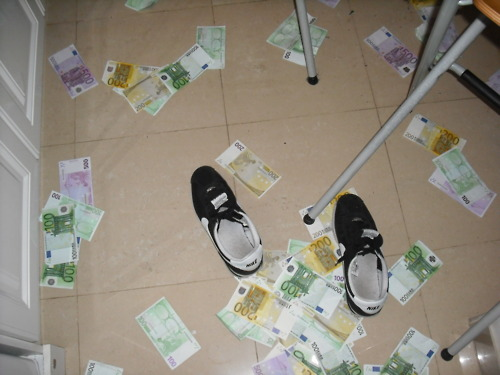Moreover, poker enabled me to think of data and how to use it in ways I couldn't before.

With over 3,000,000 hands played, I've been able to interact with it in a way noboday really has before. There nunances and qualities of hidden in plain sight.
The Tools
Currently, I enjoy using d3, Processing, R, Gephi, and some of Google's visualization tools in combination with Adobe Ps, Ai, Br, and Id.


 [ A SCREENSHOT OF MY TOOLBAR ]
[ A SCREENSHOT OF MY TOOLBAR ]
Upon discovering Processing, I also discovered that Jer Throp lives only 10 blocks away. I took all three of his workshops. At the end we created this visualization of the air traffic at Denver Airport over a 24hr period.
A 9 week sample taken from my poker database broken down by profits per stake using d3js


Since you can play poker from anywhere with an internet connection.
I took the liberty to take pictures and travel the world.

[ THALIAND, 2010 ]


I lived on this farm in the fall. It was across the street from where Jackson Pollock used to paint.
[ EAST HAMPTON, NY. FALL 2010 ]
Laos is like Thaliand, but 50 years ago.
[ Mung Nui, Laos. MAY 2010 ]
My brother going with the flow at Yellowstone National park.
[ WYOMING. SEPT 2010 ]

West Oz is great for surfing and seeing kangaroos.
[ MARGARET RIVER, AUSTRALIA. MAY 2009 ]


 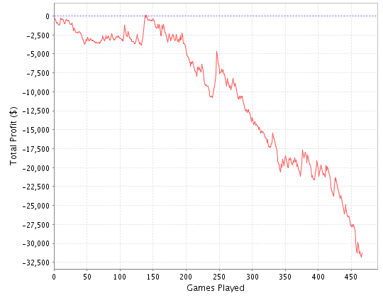
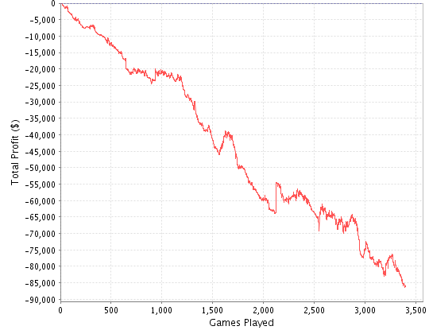
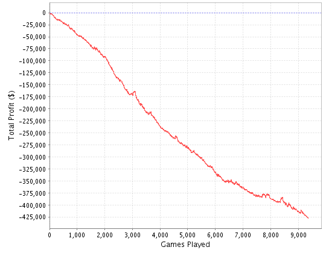
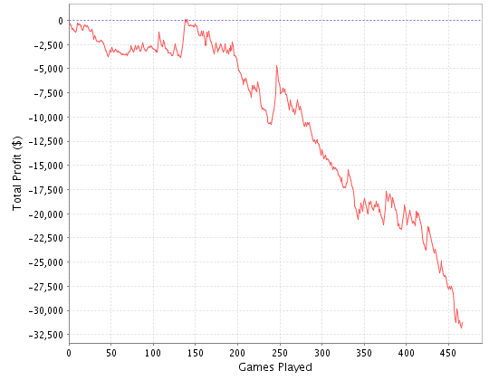
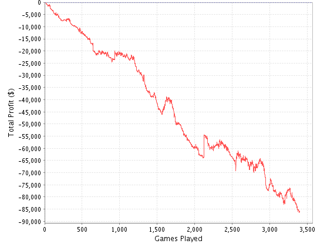
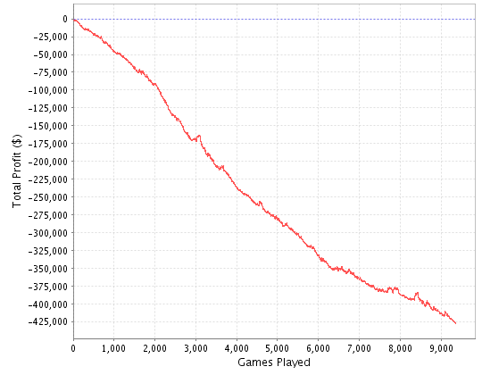
 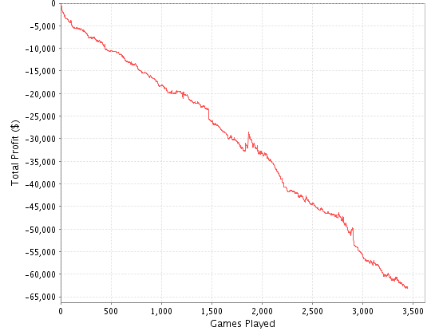
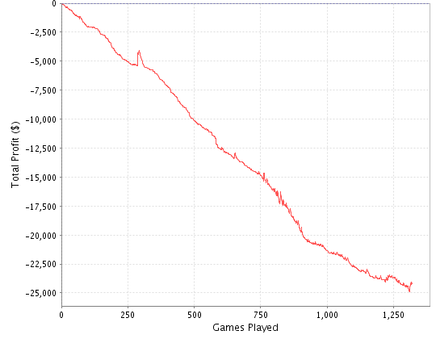
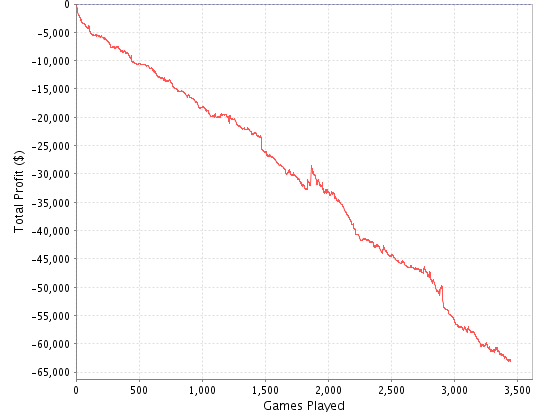
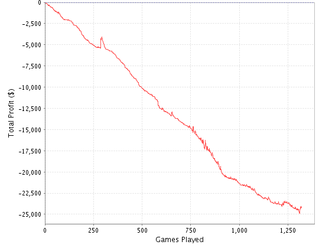
ceejigga
[ EAST HAMPTON, NY. FALL 2010 ]
EBK77
BRD22


Fragmented Views
Hit the next arrow...
... to step through ...
any type- of view
- fragments